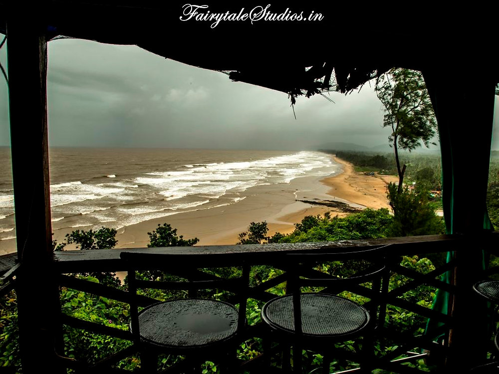
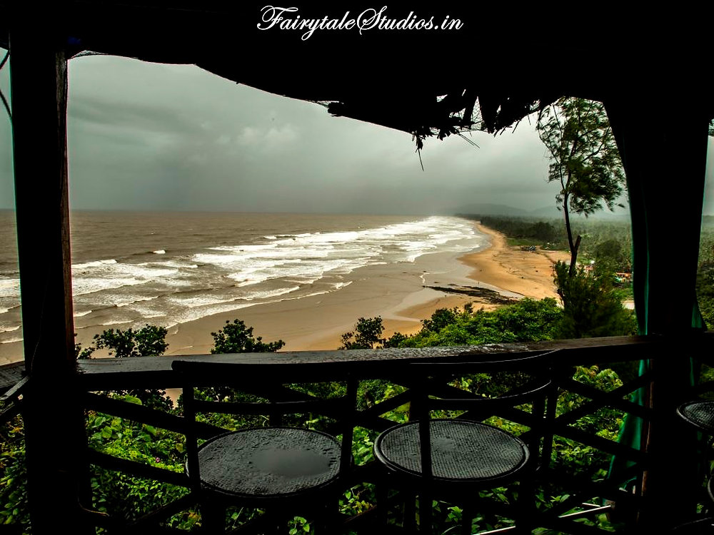
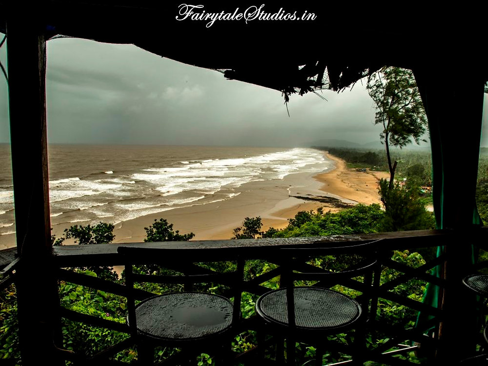

Puri Beach or the Golden beach is a beach in the city of Puri in the state of Odisha, India. It is on the shore of the Bay of Bengal. It is known for being a tourist attraction and a Hindu sacred place. The beach is the site of the annual Puri Beach Festival, which is co-sponsored by the Indian Ministry of Tourism, the city of Puri , the Development Commissioner of Handicrafts, and the Eastern Zonal Cultural Center, Kolkata. The beach hosts sand art displays, including work by international award-winning local sand artist Sudarshan Pattnaik.The Golden Beach at Puri was awarded the prestigious 'Blue Flag' tag on October 11, 2020 by the Foundation for Environment Education (FEE), Denmark. Puri Beach is located at the city of Puri and the distance between Puri railway station and the beach is only 2 km. Nearest airport is located at Bhubaneswar which is 60 km away. Buses and Taxis are available for local transportation
